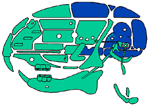
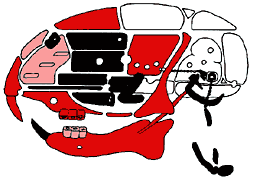

News Archives : 2004 : Development Study Finds Potential Signaling Code for Certain Facial Features
by Carol Cruzan. Morton
May 27, 2004
The outdated slang term "fox," once used to describe an attractive face of a man or woman, was closer to the scientific truth than anyone realized at the time. New findings from the lab of MCB department chair Andrew McMahon, the Frank B. Baird Jr. Professor of Science, suggest that five members of the Fox family of transcription factors may work in different combinations to sculpt certain facial structures in mice.
"During embryogenesis, most structures in the face in fact come from one cell type, called neural crest cells," says graduate student Juhee Jeong, first author of the paper in the April 15 Genes & Development . "At some point, some cells are assigned to make the bones for the jaws and some for the nose and some for part of the tongue."
So far, Jeong and her colleagues have identified up to nine different combinations of Fox transcription factors in the developing face that potentially cue neural crest cells to grow into distinct tissues in the proper positions, such as tongue, middle ear cartilage, or incisors.
"It's still a hypothesis," Jeong says. "The functional significance of the Fox code is not proven. The evidence will require a lot more work."
The results also demonstrate that a famous signaling molecule, sonic hedgehog, is essential for neural crest cells to grow and form normal faces. In people, mutations in the sonic hedgehog signaling pathway have been linked to inherited craniofacial malformations, the most severe cases of which include cyclopia, a birth defect in which a single eye is located in the area normally occupied by the nose.
Aside from the face's profound role in people's identity and relationships, head structures are also fascinating from an evolutionary point of view, McMahon says. Small variations, such as the exquisitely adapted beaks of Darwin's famous finches, can secure an ecological niche for certain species. Other subtle differences in facial features may confer large advantages in reproductive success to individuals within species.
The story begins with the neural crest cells, a type of precursor cell unique to vertebrates. The cells emerge from the developing spine in the tiny embryo. Neural crest cells eventually form many parts of the head, pigment cells in the skin, and neurons in the peripheral nervous system.
Jeong began her project by asking if the versatile signaling molecule sonic hedgehog regulates growth and pattern formation of the face as it does in other developing organs and body structures.
For researchers in a developmental genetics laboratory, eliminating a gene has been an important step in learning what it does. Unfortunately, a sonic hedgehog mutation causes severe loss in almost the entire head structure, including the brain, long before facial features are recognizable. These days, more advanced mammalian genetics tools allow researchers to engineer more precise ways to tackle complex problems.
In this case, the researchers used a neat genetic trick called a conditional knockout to shut down the signaling of sonic hedgehog only in the neural crest cells. Jeong harnessed the expression pattern of a protein called Wnt1. Other researchers in the McMahon lab had discovered Wnt1 turns on only in neural crest precursor cells just before they migrate from the dorsal neural tube. In the new mutant mice, a planted bacterial phage enzyme turns on with Wnt1, which excises a gene necessary for cells to respond to the hedgehog signal. Other embryonic cells are unaffected.
By the end of gestation, the mutants have a dramatic facial phenotype, Jeong says. The main skull covering the brain seems to develop normally, but most of the skeletal structures in the front of the head are missing, including the face. They form only small fragments of jaw, no tongue, no lower front incisors, and no middle ear cartilages. The results extend the findings from other researchers that sonic hedgehog regulates the proliferation and cell survival necessary for forming a face in chick embryos.
From there, Jeong traced the sonic hedgehog signal to the Fox genes, a family of transcription factors that turn on other genes. At this stage of the experiment, an important clue came from the results of a DNA microarray screening analysis designed to find potential targets of the hedgehog molecule by postdoctoral fellow and coauthor Toyoaki Tenzen. Five of the 35 known Fox transcription factors stood out.
In the mutant mice, Jeong found no expression of these five Fox genes at three stages of development. Instead of dividing and growing into a face, neural crest cells were dying.
In the wild-type mice, she meticulously documented a complex pattern of expression. Other researchers have knocked out each of the five Fox genes, Jeong says. One knockout clearly implicated one of the Fox transcription factors in facial development. Another knockout showed a mild facial phenotype and two others showed no facial effect. One knockout died too early to study the face.
The real proof of a Fox coding pattern requires further work, such as turning on the Fox signaling patterns for the tongue in the location that the cheek bones would normally develop. There is a well-established precedent for a similar coding pattern in the Hox family of transcription factors, which are involved in organizational patterning along the anterior-posterior axis of all metazoa. "Alternatively," McMahon says, "the Fox genes could be merely essential to cell growth and survival, rather than specific architects of shape and organization."
|  During normal development of mice, neural crest cells eventually form into the green colored skeletal structures, plus other soft tissues not shown. |
 When Sonic hedgehog signaling is removed from neural crest cells, some facial structures are mildly reduced (pink), others are severely reduced (red), and others still are completely missing (black) in the mutant mice. |